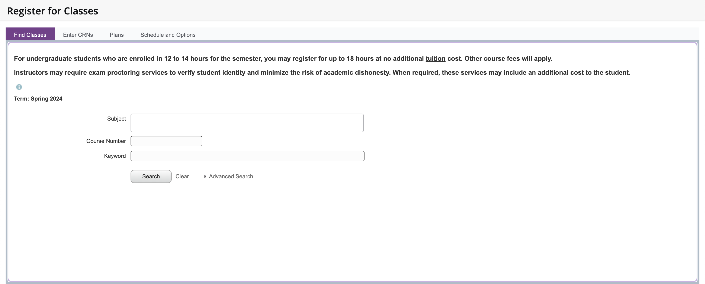
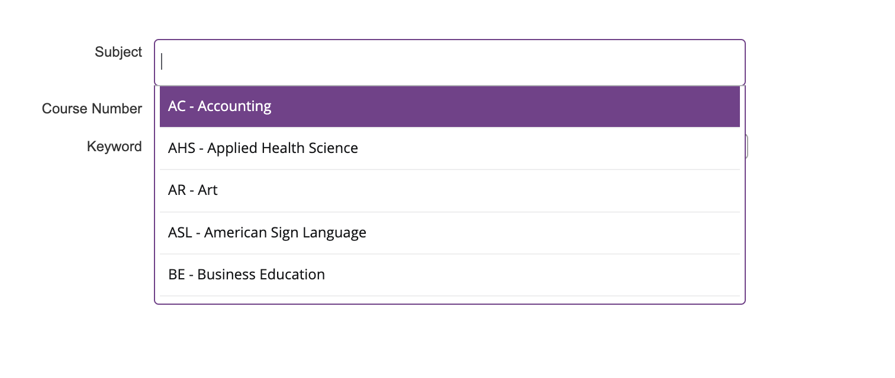

When it is time to register for classes, many people (especially new students and transfers) struggle with searching for the correct classes to take. It can be overwhelming to make sure that the class are registering for is the class that you really need.
I am a transfer student and was overwhelmed the first time I registered for classes. I was not sure how to navigate through the registration process and this process took way longer than it should take. This process needs to be fixed so students can focus on their schoolwork and not take all day to register for classes when the time comes.
As you can see, there is no helpful options except to know the subject; however, the subjects are by the department codes (ex. ITE, CIS). The student must already know the classes they want to sign up for.
This feature on the form features a drop-down box that is difficult to manage. There are many choices in the drop down menu and it includes every subject that UNA has to offer. Because this webpage goes through portal and portal has the information of the student's major, why is there not an option to enter the student's major.
In order to recieve the most accurate information possible, the form should allow the student to input their major and get a filtered list of classes that they have left to take to complete the major. This will allow the student to register for classes in half the time and be done with this and back to focusing on their present classes.